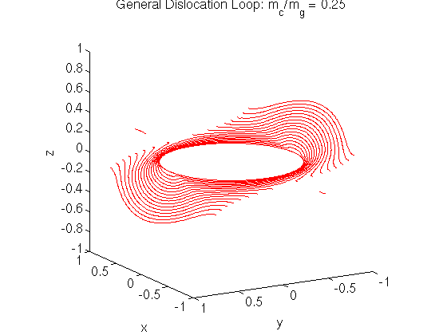

LSMDD: Development Notes
This document records the current status and issues in the development
of the parallel dislocation dynamics simulation.
2006 June 19
I have been testing the code by trying to reproduce Xiang Yang's results from
the 2003 paper. Most of the results are in good agreement when run at the
same resolution as in the paper (64x64x64). Unfortunately, at higher
resolutions, stability issues seem to arise for some of the examples.
Main Issues
- Maximum stable dt as a function of dx.
- The maximum angle allowed between the Burgers vector and the tangent
vector to the dislocation line for a dislocation line segment to be considered
to have pure screw character.
Dislocation loops
At a resolution of 64x64x64, agreement is with Xiang Yang's results are good
for the prismatic, glide and general dislocation loop examples.

At a resolution of 100x100x100, the glide loop example required a larger
applied stress to overcome the tendency for the loop to shrink. This makes
sense in light of the fact that the core radius is smaller at higher
resolutions.
Dislocations bypassing particles
At a resolution of 64x64x64, I get reasonable agreement with the serial code
at short times, but at longer times, the results are not in complete
agreement. The main difference seems to be that portions of the dislocation
line that are pure screw do not cross-slip as much in the parallel code
as in the serial code. I am currently discussing with Xiang Yang what
the appropriate criteria should be for considering a dislocation line
segment to have pure screw character.
Cross-slip (64x64x64)
As you can see in the following figures, the dislocation line does not
cross slip on the sides of the particle as much as they did in Xiang Yang's
simulations.
The maximum angle allowed between the Burgers vector and the tangent
vector to the dislocation line for a dislocation line segment to be
considered to have pure screw character is approximately 3 times the grid
spacing.
Cross-slip (100x100x100)
At higher grid resolutions, the dislocation line is more unstable than
for the 64x64x64 grid and there is less cross-slip for the portions
of the dislocation line on the two sides of the obstacle.
The maximum angle allowed between the Burgers vector and the tangent
vector to the dislocation line for a dislocation line segment to be
considered to have pure screw character is approximately 3 times the grid
spacing.
Cross-slip plus Orowan (64x64x64)
As you can see in the following figures, the dislocation line does not
cross slip up backside of the particle as much as they did in Xiang Yang's
simulations.
The maximum angle allowed between the Burgers vector and the tangent
vector to the dislocation line for a dislocation line segment to be
considered to have pure screw character is approximately 3 times the grid
spacing.
Cross-slip plus Orowan (100x100x100)
At higher grid resolutions, we require smaller time step size to get a
stable dislocation line. But even with the smaller dt, the dislocation
line does not cross-slip as high as in the 64x64x64 resolution case.
One other potential issue is the lack of symmetry in the result when using
a grid of size 100x100x100.
The maximum angle allowed between the Burgers vector and the tangent
vector to the dislocation line for a dislocation line segment to be
considered to have pure screw character is approximately 3 times the grid
spacing.
Dislocation Reactions
I tested the dislocation reaction example where two sets of initially
straight dislocation lines react to form a hexagonal-like structure.
At a resolution of 64x64x64, the reaction does not complete and a large
gap remains between the edges of the crossing dislocation lines.
At high resolutions, some sort of instability occurs near the region
where the dislocations cross.
The maximum angle allowed between the Burgers vector and the tangent
vector to the dislocation line for a dislocation line segment to be
considered to have pure screw character is approximately 3 times the grid
spacing.